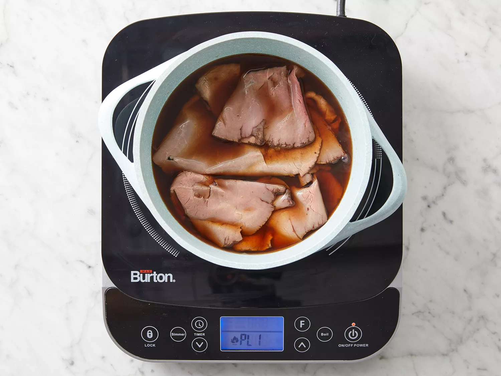
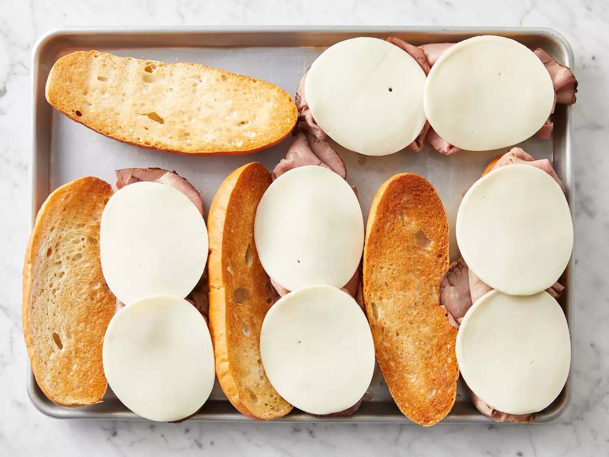
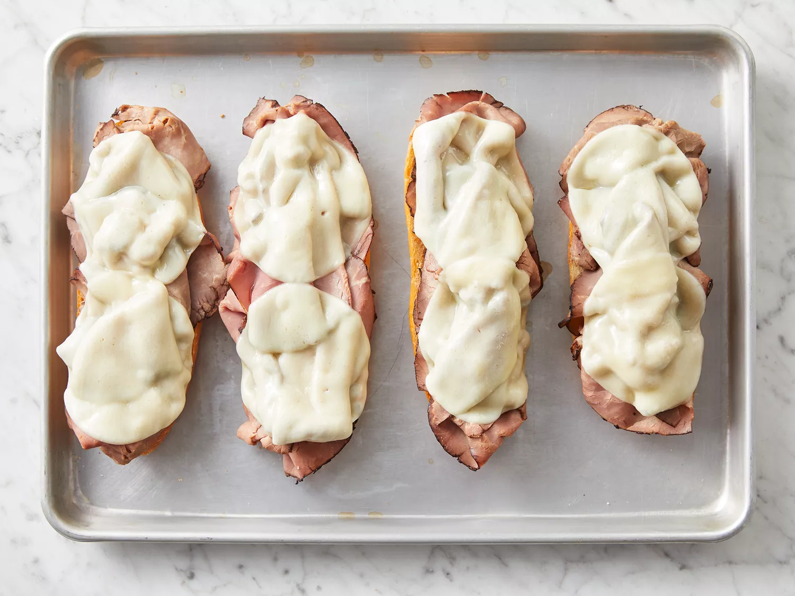
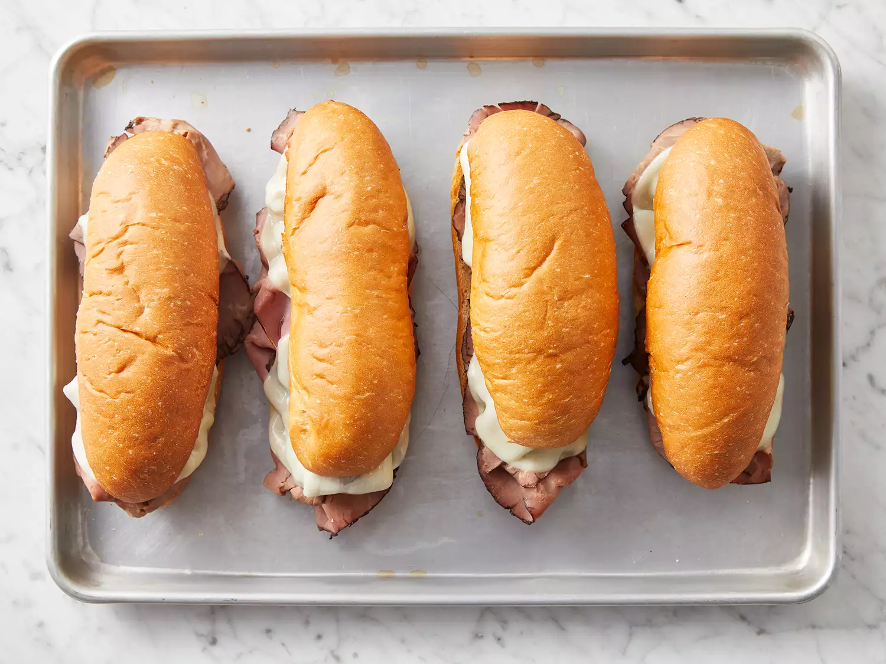

Easy French Dip Sandwiches

Discription
let's make a good sandwiches in home without comparmising the quality of the sandwiches,it's delicious
Ingredients
- 4 hoagie rolls,split lengthwise
- 1(10.5 ounce) can beef consomme
- 1 cup water
- 1 pound thinly sliced leli roast beef
- 8 slices provolone cheese
Steps
- Preheat the oven to 350 degrees F (175 degrees C)

- Open hoagie rolls and lay them out on a baking sheet.
- Heat beef consommé and water in a medium saucepan over medium-high heat to make a rich beef broth.

- Place roast beef in broth and warm for 3 minutes.

- Arrange meat on hoagie rolls and top each roll with 2 slices of provolone.

- Bake sandwiches in the preheated oven until cheese melts, about 5 minutes.

- Serve sandwiches with small bowls of warm broth for dipping.